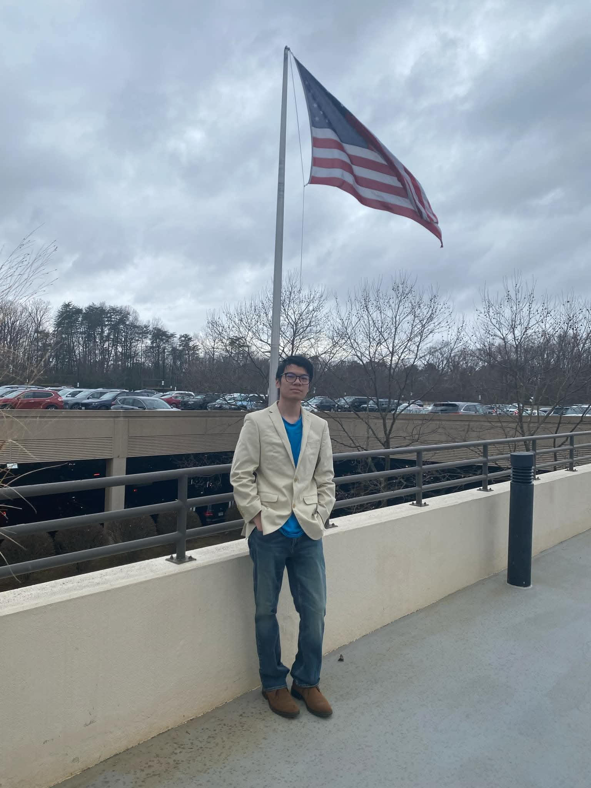

Phi Anh Kiet Nguyen

Welcome to my portfolio! I am an Information Technology student with a focus on cybersecurity. I am passionate about network administration, web development, software engineering, and exploring web development. My passion lies in exploration and continuous self-improvement. I love diving into new challenges, uncovering better ways to solve problems, and keeping my mind active and engaged with everything the world has to offer.